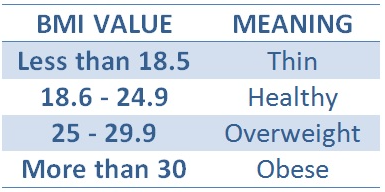

What is BMI? |
|---|
BMI is a proxy for a person’s body fat. It is an easy way to screen for having overweight or obesity. BMI was first developed by a scientist in 1832, then renamed “body mass index” in 1974. Today, BMI is used to define if a person has overweight and obesity. These are conditions where someone’s weight is greater than what is deemed to be a normal or healthy weight. |
Screening for excess weight is important because having too much fat in our bodies increases our health risks. BMI can help you and your healthcare provider determine if your weight is risky to your health. Having a BMI that is too high can put you at greater risk for certain diseases, like heart disease and type 2 diabetes. Research over many years has shown that health complications increase as BMI increases. |
|  |